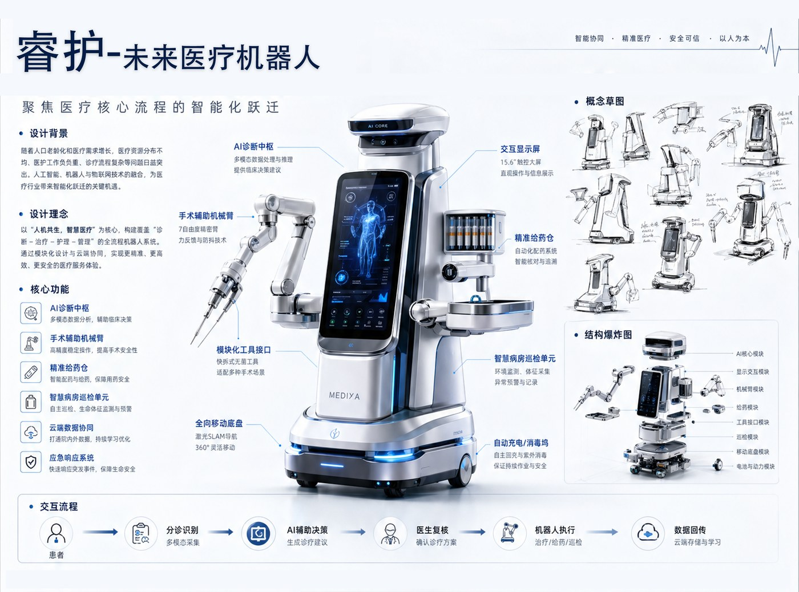
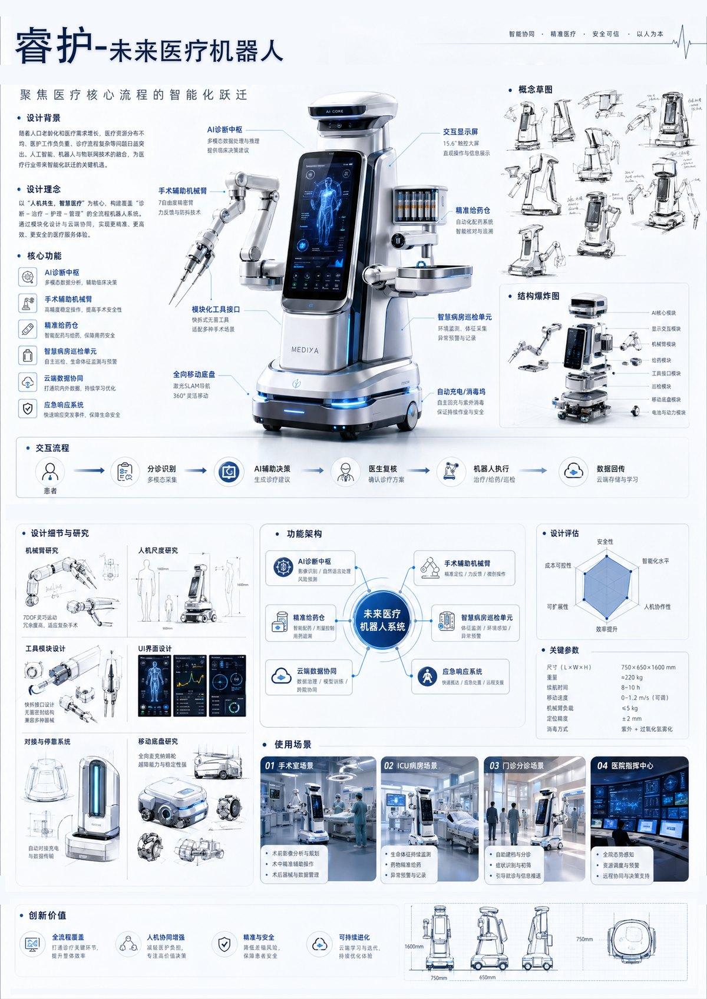

Challenge
医疗机器人容易显得冰冷、压迫，需要同时传达专业能力和患者可接受的亲和感。
概念设计 · 未来医疗机器人
面向未来智慧医院的医疗机器人概念。页面把原有概念海报转换为更适合网页阅读的案例叙事：先说明医疗场景中的信任问题，再展示造型、灯光反馈和 AI 辅助诊疗的系统想象。

医疗机器人容易显得冰冷、压迫，需要同时传达专业能力和患者可接受的亲和感。
负责未来医院场景设定、形态语言、灯光反馈和功能模块整合表达。
用柔和流线、低攻击性轮廓和清晰信息界面，降低医疗设备的距离感。
展示 AI 辅助诊疗、巡检和手术支持的未来想象，也强化医疗产品中的信任策略。
睿护的核心不是把机器人做得更复杂，而是在医院高压环境中建立可靠、克制、可沟通的设备形象。造型语言需要让医生相信它专业，也让患者感到被照护。

Design Strategy
弱化尖锐线条，让医疗机器人从“机械臂”转向更可接受的照护设备形象。
灯光用于传达工作状态、提醒和反馈，避免患者只能通过机械动作判断设备意图。
将巡检、诊疗辅助和数据分析作为同一医院服务系统中的不同触点。